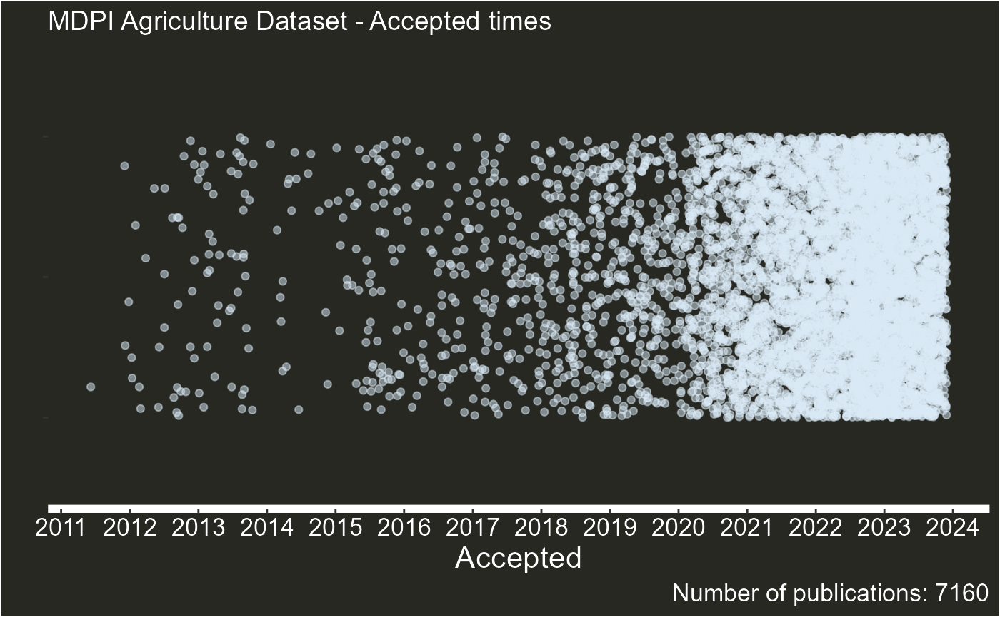

Overview
The function plot_articles() uses the data frame
resulting from using article_info() to plot predefined
graph types to summarize different The function plot_articles() uses the
data frame resulting from article_info() to create predefined graph
types that summarize various aspects of the data. In addition to the
output of article_info(), plot_articles()
requires:
- A string specifying the journal name for labeling the plot.
- A type argument to select the desired graph type.
Currently, five graph types are available. Below, we demonstrate
these options using the Agriculture dataset obtained via
article_info().
1. type = “summary”
This type option generates a dot graph, where each dot is a publication, against the year it was published.
plot_articles(agriculture,"Agriculture",type="summary")
2. type = “tat”
This type option shows the monthly changes in turnaround times (times between submission and article acceptance)
plot_articles(agriculture,"Agriculture",type="tat")
#> Scale for x is already present.
#> Adding another scale for x, which will replace the existing scale.3. type = “issues”
This type option shows the yearly evolution on proportions of special issues, sections, topics and normal articles.
plot_articles(agriculture,"Agriculture",type="issues")5. type = “type”
This type option shows the yearly evolution of types of articles published (Editorials, reviews,etc).
plot_articles(agriculture,"Agriculture",type="issues")
The function plot_articles() provides predefined graph
types designed to summarize key aspects of the data quickly and
effectively. However, users are encouraged to explore the data frame
produced by article_info() to create custom visualizations
tailored to their specific needs. The flexibility of the output makes it
easy to integrate with popular R visualization libraries such as ggplot2
or plotly.
If you develop unique or insightful graphs that could benefit other users, consider submitting your code or ideas to contribute to enhancing this package.